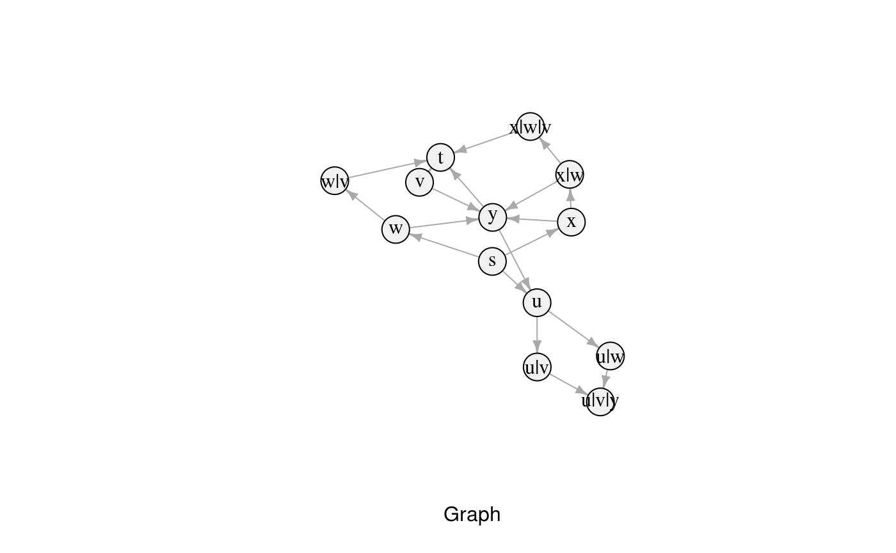

This is an example to showcase how R-SPPFP can be used along with other existing packages. The full code is accessible from R-SPPFP’s GitHub repository in the examples package.
The first step is to define the graph and its forbidden paths. This is done in the following snippet, with a set of forbidden paths defined as F = {f_1, f_2, f_3, f_4}, where f_1 = {u, v, y, u}, f_2 = {w, u, y, u}, f_3 = {w, v, y} and f_4 = {x, w, v, y, t}. Though this example is defined arbitrarily, and the input data is hard-coded, it is worth noting that the input can be obtained from different sources such as databases, spreadsheet files, and others. However, that process is outside of R-SPPFP’s scope.
# Load the sample graph
graph <- structure(list(from = c("s", "s", "s", "u", "u", "w", "w", "x", "x", "v", "v", "y", "y"),
to = c("u", "w", "x", "w", "v", "v", "y", "w", "y", "y", "t", "t", "u"),
cost = c(1L, 4L, 1L, 2L, 7L, 1L, 2L, 5L, 1L, 4L, 1L, 3L, 9L)),
.Names = c("from", "to", "cost"), class = "data.frame", row.names = c(NA, -13L))
# Load the forbidden paths
fpaths <- structure(list(V1 = c("u", "u", "w", "x"), V2 = c("v", "w", "v","w"), V3 = c("y", "y", "y", "v"),
V4 = c("u", "u", "", "y"), V5 = c("", "", "", "t")),
.Names = c("V1", "V2", "V3", "V4", "V5"), class = "data.frame", row.names = c(NA, -4L))After this, it is possible to use R-SPPFP’s functions to transform the original graph, into G*. In this case, some forbidden paths have sub-paths that are part of others; particular examples are f_3 and f_4. As a result, the example makes use of Hsu’s backward construction function.
# Run the algorithm and transform the graph
gStar <- modify_graph_hsu(graph, fpaths)
gStar
#> from to cost
#> 1 s u 1
#> 2 s w 4
#> 3 s x 1
#> 7 w y 2
#> 9 x y 1
#> 10 v y 4
#> 11 v t 1
#> 12 y t 3
#> 13 y u 9
#> 14 u u|v 7
#> 21 u|v u|v|y 4
#> 31 u u|w 2
#> 4 u|w u|v|y 2
#> 16 w w|v 1
#> 23 x x|w 5
#> 33 x|w x|w|v 1
#> 17 w|v t 1
#> 24 x|w y 2
#> 34 x|w|v t 1
#> 41 u|v t 1
#> 5 u|v|y t 3
#> 6 u|w w|v 1The resulting data frame (named in the code as gStar) can be transformed to other data types, specific of particular libraries. For example, it is possible to use the function graph_from_data_frame(...) provided by iGraph (Csárdi & Nepusz, 2006), to convert gStar in order to use iGraph shortest-path functionalities.
# Transform gStar to iGraph's data format
gStar.igraph <- graph_from_data_frame(gStar)Even more, both graphs can be plotted using tkplot(…) or plot(...) function. The following code shows an example of visualization using iGraphs functions.
# This can be used to plot the graph
plot(gStar.igraph, edge.arrow.size = 0.5, vertex.size = 20, xlab = "Graph", vertex.color = "#F1F1F1", vertex.label.color = "#050505")
As any path calculated in gStar will be given in terms of its nodes. Hence, as a result of the transformation process, gStar nodes nStar are equivalences of the original nodes. For example, a node labeled Argo123 in the original graph G can be divided into several new nStar_i, resulting in: Troya789|Argo123, Paris456|Troya789|Argo123 and Polux852|Argo123, besides the original node. Therefore, when searching for a path from a node to another node n_i, the algorithm must consider all of the nStar_i.
The package R-SPPFP provides an additional function to obtain this equivalences. A code example can be seen below:
# This can be used to plot the graph
get_all_nodes(gStar, "v")
#> [1] "v" "u|v" "w|v" "x|w|v"With this, the flow to obtain a shortest path with any algorithm, can be summarized as follows: 1. Obtain all of the target node’s equivalences. 2. For each target node found in (1): - Get the shortest path and its weight/cost from the origin node to it. 3. The less costly path is the solution.
This algorithm has been implemented for iGraph in an example function, named get_shortest_path. However, although it can be used to simplify solving the shortest path, its aim is to provide guidance on how to impliment the previous logic.
Its code is the following:
get_shortest_path <- function(g, origin, dest) {
# Convert the graph
g.i <- graph_from_data_frame(g)
# Get all the shortest paths to each node
sp <- shortest_paths(g.i, from = origin, to = get_all_nodes(g, dest), weights = E(g.i)$weight, output = "both")
# Return the shortest path
sp$vpath[which.min(
foreach(i = 1:length(sp$epath), .combine = c) %do% {
ifelse( length(sp$epath[i]), sum(E(g.i)$weight[ sp$epath[[i]] ]), 999999999)
}
)]
}And it can be used as in the following example:
# Obtain the shortest path using the simplified function
shortestPath <- get_shortest_path(gStar, "u", "t")
shortestPath
#> [[1]]
#> + 3/13 vertices, named, from 3b7f935:
#> [1] u u|v tAlso, it is worth pointing out that a path can only be translated if it is presented as a list or vector of nodes, written sequentially. In iGraph, this is known as vpaths (vertexes paths).
# Translate the vpath
parse_vpath(V(gStar.igraph)$name[ unlist(shortestPath) ])
#> [1] "u" "v" "t"